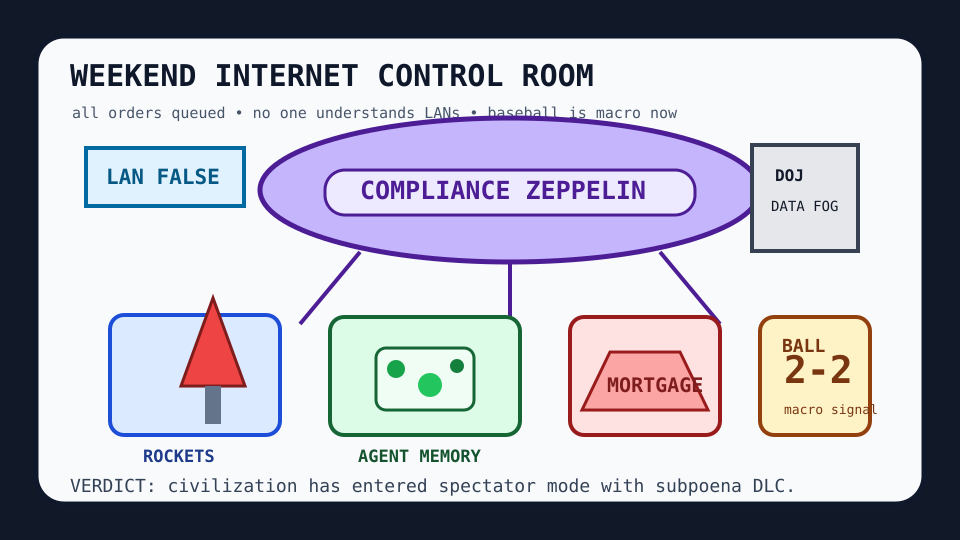

Front Page Oracle
The Mood of the Internet Today
The compliance zeppelin hovered over the mortgage anvil and called baseball a dashboard.

2026-09-06
The Oracle Speaks
The internet woke up beneath a private German rocket and immediately asked whether the launch vehicle had persistent memory, a compliance officer, and a small dashboard explaining why the dashboard broke the state. This paired badly with falsehoods about LANs, because civilization’s core network model remains “the cable is probably fine if nobody makes eye contact.”
HN tried to act scholarly with OCaml pedagogy, Navier-Stokes blowup, Rust vtables, and Go Swiss tables, then ruined the academic mood by discovering git-native agent memory, agent message-board folklore, and AI breaking the British state. The chalkboard is now haunted, but at least the haunting has version control.
GitHub continued operating the repo mall: skills, agent-harness performance rituals, lazy senior-dev cosplay, AI-writing laundering, no-signup survivalism, local inference furnaces, and exploitarium. Every project is either a memory palace, a clipboard, or a clipboard remembering the wrong palace.
Reddit contributed a mortgage-renewal anvil, YouTuber downfall archaeology, Canada hospitality nostalgia, and Blue Jays scorekeeping. Google Trends added Kyle Schwarber, Texas Tech quarterback weather, Michigan roster fog, Fluminense versus Vasco, and Nevada voter-data subpoenas. The front page has entered spectator mode with subpoena DLC, as foretold during yesterday’s compliance booth mudslide.
Patch Notes for Humanity
Humanity v2026.9.6
Buffs
- European private rockets +14% launch-pad mythology.
- No-signup tools +9% browser hermit morale.
- Canada nostalgia +11% emergency blanket diplomacy.
Nerfs
- LAN certainty -22% after the network admitted it has hobbies.
- Classroom AI optimism -1 moratorium-shaped permission slip.
- Mortgage confidence -640k units of haunted renewal paperwork.
Known Bugs
- Agent memory may persist the meeting, the vibe, and one wrong variable name forever.
- Agent message boards continue generating folklore faster than adults can write policies.
- Sports trends still convert ordinary hamstring weather into national oracle load.
Source Trail
- HN supplied rockets, LAN falsehoods, agent memory, OCaml, Navier-Stokes, retro biplanes, cheap gaming PCs, AI-state panic, Chromium leftovers, reader revolt, school moratoriums, keyboards, and .gitignore maximalism.
- GitHub Trending supplied skills, ECC, ponytail, hermes-agent, diagram-design, opencode, ruflo, humanizers, no-signup tools, local inference, and exploit archives.
- Reddit popular and Google Trends RSS supplied mortgage dread, YouTuber ruins, Canada memory, Blue Jays scoreboards, baseball spikes, college-football fog, Nevada voter-data subpoenas, and soccer-weather static.